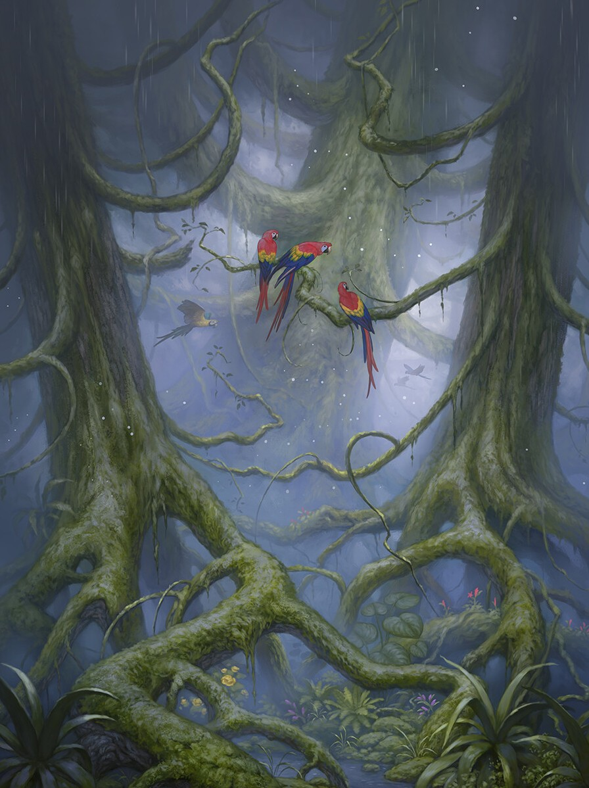
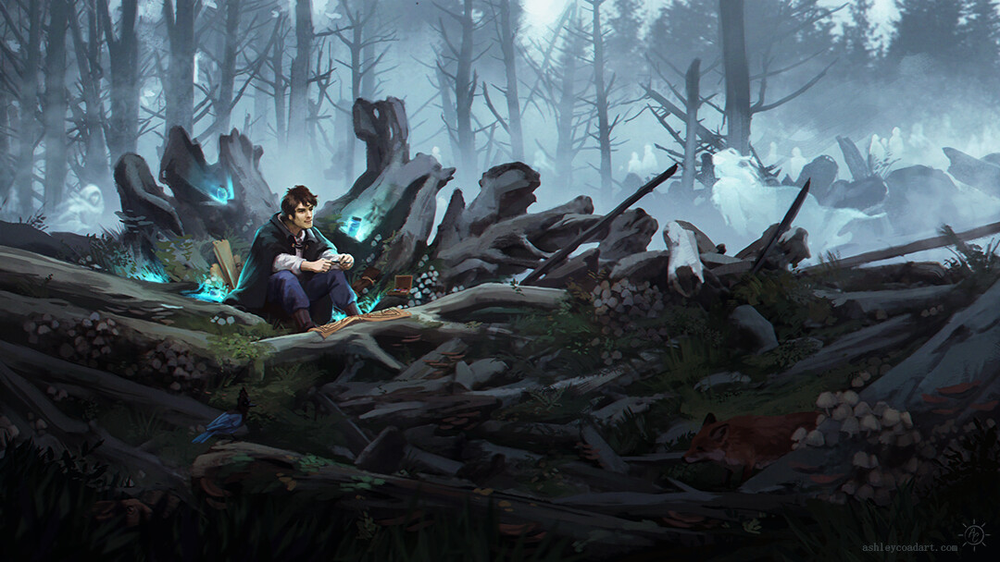
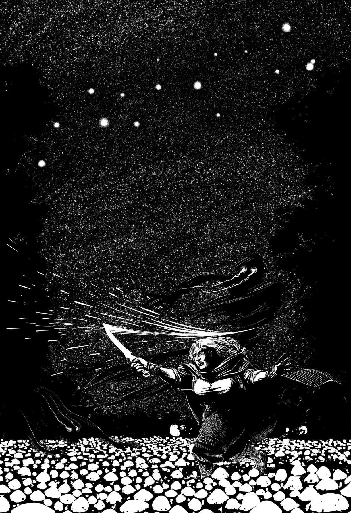

THRENODY
A dark world of haunting spirits and danger. The planet is heavily influenced by dark, magical forces, where death isn't final.
The Forest of Hell, which forms a large portion of Threnody, is home to spectral creatures called shades that are deadly to anyone who disobeys certain cryptic laws.

THRENODITE SYSTEM
The Threnodite system is the planetary system that contains Threnody. There are four planets in this system, however, more planets existed in the planetary system in the distant past.
Three of the four remaining planets as well as the sole moon, are named after different types of songs of mourning: Monody, Elegy, Threnody, and Purity.


INHABITANTS
The inhabitants of Threnody are steadfast, forged by living in constant survival in a world where death is more punishing than final. The people of Threnody live in fear of the shades, ghostly remnants of the dead that roam the Forests and attack the living. To survive, Threnodites follow strict rules, such as avoiding fire, running, or spilling blood.
There are two main groups of people: those who live in safety away from the Forests, and those known as Forest Dwellers, who strive in the territory of the Shades in the Forest, and follow even stricter rules just to survive.
SHADES
Shades are the most feared and most interesting aspect of life on Threnody. These spectral beings are the skewed spirits of the dead. Souls that persist after death and become dangerous to the living. Shades are not completely mindless, but they follow strict, seemingly random rules of behavior. If provoked, they attack indiscriminately. draining the life from their victims.
